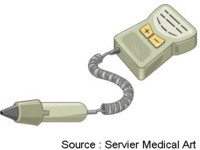
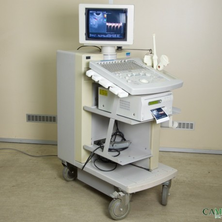

L'echo-doppler
Definitions
Le doppler
Le doppler
permet l'etude de la circulation sanguine grece a une sonde emettrice
et receptrice d'ultrasons.
Le
principe de l'effet doppler repose sur le changement de frequence d'une
onde d'ultrasons reflechie par une cible en mouvement : les globules
rouges circulant.
Il permet
ainsi d'apprecier le debit du sang dans le vaisseau (artere ou veine),
sa direction et l'absence ou presence de turbulences (aspect irregulier
de la progression).

L'echographie
L'echographie est une
technique d'imagerie d'exploration de l'interieur du corps basee sur
les ultrasons.
Le
faisceau d'ultrasons emis par une sonde se propage au travers de
certaines zone de l'organisme et est reflechi par les differentes
structures anatomiques qu'il rencontre selon la densite et la nature du
milieu traverse. Le signal recueilli est ensuite traite, ce qui permet
la visualisation des organes et des structures anatomiques.

L'echo-doppler
L'echo-doppler est l'association de l'echographie et du doppler, ce qui
permet de renseigner en plus de la circulaion sanguine, sur
la forme des vaisseaux.
Les
types d'echo-dopplers
L'echo-doppler
arteriel
Principe
- Permet visualiser les arteres et les
flux sanguins qui les parcourent.
Objectifs
- Examen complementaire de reference
pratique dans le bilan des arterites des membres inferieurs et dans
leur suivi.
- Depister et bilan d'arterites, plaques
d'atherome.
- Detection, localisation et
quantification des retrecissements arteriels et des zones eventuelles
de reflux.
L'echo-doppler
cardiaque
Principe
- Permet de visualiser en mouvement, le
cœur, ses parois et ses valves et la circulation du sang dans les
cavites cardiaques et les gros vaisseaux (aorte, veine cave, artere et
veine pulmonaires).
Objectif
- Apprecier les mouvements du cœur, ses
parois et ses valves et la
circulation du sang dans les cavites cardiaques et les gros vaisseaux.
L'echo-doppler
veineux
Principe
- Permet de visualiser les veines et les
flux sanguins qui les parcourent.
Objectifs
- Depister et bilan des thromboses
veineuses profondes, des varices.
- Detection, localisation et
quantification des retrecissements veineux et des zones eventuelles de
reflux.